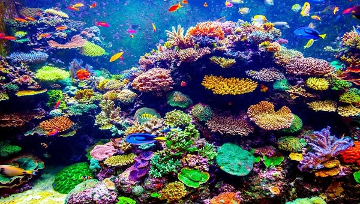
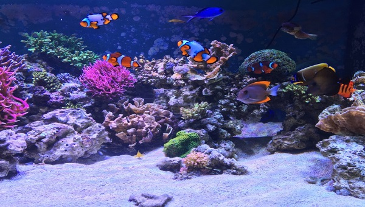

Un acuario marino es una ventana submarina al mundo de los arrecifes de coral, es la manera en la que puedes tener en tu casa u oficina una cercanía con el impresionante mundo submarino. De la misma manera que se acostumbra con acuarios
de agua dulce, existen muchas variedades de peces marinos que se comercializan legalmente con fines ornamentales en el mundo, a Mexico se importan mas de 400 especies de peces ornamentales marinos provenientes de lugares como Malasia,
Indonesia, Hawaii, Sri Lanka, Australia, Estados Unidos, etc.
Acuario marino
Si estás pensando en montar un acuario marino, seguro que esta guía te ayudará a realizarlo en las mejores condiciones, cometer el menor número de errores posibles y que tu acuario marino funcione correctamente a largo plazo. Existe la
falsa impresión de que un acuario marino es más difícil de mantener que un acuario de agua dulce. Esto es falso, cualquiera puede tener un acuario marino, aunque no tenga experiencia previa.
Tampoco nos costará mucho tiempo mantenerlo en buenas condiciones, al menos, no mucho más tiempo del que costaría mantener un acuario de agua dulce.
Aquí lo importante es el tipo de hábitat que vamos a recrear. Hay algunos realmente sencillos y que no requieren demasiadas complicaciones, así como hay peces más fáciles o más difíciles de criar en el acuario marino.
En cuanto a la elección de los peces, es cierto que hay peces marinos más fáciles de mantener, y otros que resultan más delicados, pero igualmente ese problema lo tenemos en un acuario de agua dulce. Determinadas especies de peces no son
fáciles de mantener en cautividad, mientras que otras se adaptan con facilidad a la vida en un acuario.
Para comenzar con acuario marino, debemos tener en cuenta el tamaño. Un acuario marino para principiantes debería tener como mínimo unos 200 litros, es un tamaño de acuario que nos permite minimizar cualquier posible error de principiante…se
que es posible que te gustaría empezar por un nano acuario marino, pero no creo que sea la mejor opción.
A partir de ese tamaño mínimo, podemos comprar el acuario que nos guste, siempre teniendo en cuenta el tipo de peces que vamos a criar y su cantidad.

Cuidados de un acuario marino
Principalmente tenemos que estar conscientes de que nuestro acuario marino es el lugar donde habitan peces que requieren de un buen entorno para sobrevivir, para ello debemos de estar al pendiente de los parámetros químicos del agua.
Al igual que en el acuario de agua dulce, al acuario marino se le deben revisar constantemente parámetros químicos como el PH, Amoniaco, Nitritos y Nitratos, y a diferencia del agua dulce, en el acuario marino debemos revisar también la
densidad del agua, la cantidad de sal disuelta en el agua de nuestro acuario.
Adicionalmente podemos revisar otros parámetros como el calcio, yodo, fosfatos, etc. Un punto muy importante es saber de los parámetros ideales para las especies de peces que tenemos en nuestro acuario o que deseamos tener, existen peces
de aguas frías, peces de aguas cálidas, de profundad, etc.
A diferencia de gran parte de los peces de agua dulce, la mayoría de los peces marinos son muy susceptibles a la química del agua y a los cambios bruscos de temperatura, por que debemos prestar especial atención en eso.
Colocación
Si nuestro acuario va a tener más de 300 litros, debemos revisar que el lugar elegido lo puede soportar sin problemas, así como la mesa donde lo vamos a colocar.
Como precaución y para absorber cualquier tipo de irregularidad de la superficie donde lo colocamos, o desnivel del suelo, es recomendable colocar bajo el acuario una plancha de poliestireno expandido o algunos de los materiales que para
este efecto se venden en el mercado.
Limpieza
Una vez colocado en su ubicación definitiva, debemos limpiar bien el acuario. No hay que olvidar que en su fabricación se han utilizado todo tipo de productos químicos, y que en la manipulación lo habremos llenado de huellas.
Para su limpieza evitaremos productos químicos, sólo una esponja, agua clara y productos adecuados para acuarios. En su defecto, podemos utilizar lejía diluida en agua al 5%.

El agua del acuario
Una vez que el acuario ya está limpio y seco, podremos comenzar a llenarlo de agua. Idealmente el agua que utilizaremos será filtrada por un sistema de ósmosis inversa, pero si no es posible, el agua del grifo también puede ir bien, siempre
que no contenga nitratos, fosfatos, cloros, ni ácido silícico. Lo más probable es que el agua del grifo tenga cloro. El cloro se evapora, así que podríamos utilizar agua del grifo dejándola reposar 24 horas.
Temperatura del agua
La temperatura del agua se debe mover sobre los 25ºC, evitando que baje de los 20ºC y que no suba de los 29ºC. Aunque durante unos días no vamos a introducir peces en el acuario, conviene que el agua vaya tomando la temperatura adecuada.
Para regular y mantener la temperatura del acuario debemos utilizar un termocalentador. En el mercado hay varios tipos de termocalentadores, aunque los más populares son los sumergibles.
Densidad del agua
A esta agua, hay que añadirle sal marina para acuarios, o sea, primero ponemos el agua y luego la sal, nunca a la inversa. El agua tiene llegar a una densidad aproximada de 1.025 gr/cm3, que modificaremos en función de las necesidades
de los peces marinos que vayamos a introducir. La densidad hay que medirla con el agua ya caliente, ya que el agua se vuelve menos densa cuando está más caliente, y al revés.